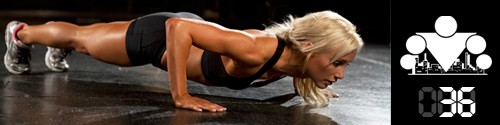

100 Дневный воркаут
<==== Вернуться к оглавлению
День 36. Понимание вместо Повторения

Дай человеку рыбу и он будет сыт на один день.
Научи человека рыбачить и он будет сыт всю жизнь. - Лао Цзы
Очень мудрое и очень верное изречение, прочитанное мною в одной древней китайской книжке. И сегодня вас опять ждёт инфо-пост скорее не о фитнесе, а о философии жизни.
Признаюсь честно, что я, как и многие из нас, когда только начинал тренироваться, прошерстил немало сайтов и журналов в поисках информации о тренировках, упражнениях, методиках и всяких прочих вещах. Моей первичной целью было построение тела, потому что силовые показатели растить гораздо проще, чем эстетичное телосложение строить. И хотя я уже тогда знал, что никакой волшебной универсальной методики, подходящей сразу всем и дающей результаты нет, подсознательно, я всё равно верил, что где-то среди горы фотографий и видео с упражнениями, среди описаний методик и схем, я найду именно то, что поможет мне добиться желаемого результата.
В итоге - не нашёл. И не нашёл именно потому, что в принципе того, что я искал не существует. Не существует одного единственного правильного ответа на вопрос, какой набор упражнений нужно делать, чтобы накачать ту или иную мышцу. Все мы разные, кому-то будут подходить одни упражнения, кому-то другие, поэтому когда я вижу в группах ВКонтакте или в интернете посты из серии "5 взрывных упражнений для тренировки грудных мышц" у меня невольно появляется улыбка на лице. Но подобные темы популярны, потому что людям очень нравится получать готовые ответы, которые гораздо удобнее, чем разбираться во всём самому. Даже если они в итоге не работают. К сожалению мало кто задумывается об эффективности такого подхода, и ещё меньше людей склонны винить новомодную методику в отсутствии у них результата (чаще всего люди винят самих себя).
Всего 2 примера для того, чтобы пояснить мою мысль.
1) Все мы видели эти глянцевые журналы о фитнесе, на обложках которых чаще всего можно прочитать заголовки вроде
"Супер-пресс за 28 дней"
или
"Успей накачать большие руки к лету"
. Звучит довольно заманчиво не правда лй И вот ты берёшь этот журнал, смотришь на фотографии фитнес-тренера, которые иллюстрируют методики (оставим в стороне сейчас, что человек на фото зарабатывает себе тренировками на жизнь, равно как и фотограф, который его снимал, который зарабатывает себе на жизнь хорошими (!) фотографиями, а ретушер, который обрабатывал фотки (!), зарабатывает хорошей ретушью) и думаешь, ну если это сработало для него, то сработает и для меня. И начинаешь тренироваться по этой методике. А знаете что происходит потом? Время идёт, а результаты не появляются! Ты думаешь "Какого чёрта? Я же всё делаю правильно, я же всё делаю так, как это написано, так почему ничего не происходит?" Ты думаешь "Наверное я что-то делаю не так, раз у него всё получилось, а у меня нет!" и снова лезешь в интернет и журналы в поисках готовых ответов! Замкнутый круг на самом деле, потому что таким образом ты не пытаешься найти причину, разобраться в ситуации и понять, что происходит. Вместо этого ты настойчиво перебираешь предлагаемые тебе ответы (чаще всего ещё и платные) в поисках подходящего решения. Ты пытаешься повторять за кем-то, вместо того, чтобы понять и двигаться самостоятельно.
2) Для того, чтобы понять разницу между пониманием и простым повторением предлагаю сыграть в следующую игру. Ниже я напишу некоторое 15-ти значное число и дам вам 10 секунд, чтобы вы его запомнили. По 1 секунде на каждый знак, это не сложно. после этого отворачиваетесь от компьютера и пробуете по памяти написать его на бумажке. Готовы?
112358132134558
Ну как, отвечайте только честно получилось? Наверняка задача не из самых тривиальных, верно? На самом деле нет. Конечно, запомнить за 10 секунд 15 знаков и потом повторить их по памяти это не простое дело, но весь вопрос заключается в том, нужно ли их было запоминать?
На самом деле, не нужно было, поскольку представленное число является вариацией последовательности Фибоначчи, то вам достаточно было запомнить первые две цифры и количество цифр в числе. Правда ещё нужно было увидеть в этом числе последовательность, и это именно то, к чему я веду.
Одна из ключевых идей
100 дневного воркаута
заключается в том, чтобы дать вам именно понимание того, как работает ваш организм и как можно сделать так, чтобы он работал лучше. Я стараюсь давать по минимуму готовых ответов и по максимуму информации к размышлению. Я хочу, чтобы по окончании этих 100 дней вы уже сами могли свободно ориентироваться в вопросах тренировок и правильного питания!
Сегодня уже 36-ой день нашего
БАЗОВОГО
блока, а это значит, что уже совсем скоро он закончится =) В самом начале
ПРОДВИНУТОГО
блока я постараюсь разобрать все используемые нами упражнения максимально просто с точки зрения биомеханики и нагрузки на мышцы и объяснить вам, как и что нужно делать, чтобы задействовались те или иные мышцы. На основании этих знаний вы сможете сами довольно легко после окончания программы составлять себе тренировочные схемы и подбирать упражнения, которые будут рассчитаны именно на достижение ваших целей!
P.S.
Я помню, что на первых курсах университета мне довольно сложно давалась Микроэкономика. Тогда я просто пытался запомнить и повторить всё то, что нам преподавали. Не самая лучшая стратегия, могу вам сказать, потому что память далеко не всегда работает так, как вам хочется, а если ты что-то забываешь, то сразу же начинаешь "плавать". Сейчас это кажется даже забавным, потому что к концу своего обучения я уже отлично понимал суть Микроэкономики и поэтому все те формулы, которые раньше казались такими сложными, сразу становились простыми и очевидными. А если что-то и забывалось, то это можно было вывести из некоторых предпосылок (ещё один плюс наук с математическим аппаратом!). Поэтому ещё раз мой вам совет - старайтесь разбираться и понимать, а не просто повторять за кем-то!
P.P.S.
Отличное видео в тему того, как делают результаты "До" и "После" в журналах и интернете:
======> День 37. Тренировки в ХОЛОД и в ЖАРУ